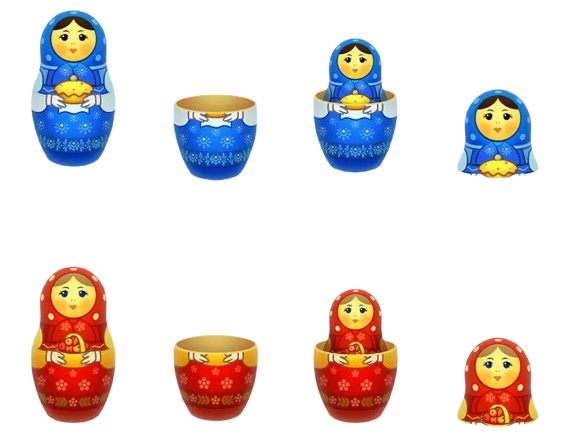

📊 Part 1: The Hierarchy of Visuals – Relationships & Distinctions
Think of these concepts as a matryoshka doll (

Level 1 The Atom – The Individual Plot
What it is: A single, irreducible graphical representation of data—one bar chart, one line graph, one scatter plot. It answers a single, specific question or shows one relationship.
Distinction: It is the raw material. No surrounding context, no interactivity, no narrative arc. It's a statement, not a story.
Example: "What were sales by quarter?"
Level 2 The System – Data Visualization & Information Visualization
Data Visualization (Data Viz): Visual representation of quantitative data (numbers, measurements). Purpose: amplify cognition—discovery and sense-making.
Information Visualization (Info Viz): Visual representation of abstract, non-numerical, or conceptual data (hierarchies, networks, flows, text). Purpose: make a complex mental model tangible.
Relationship: All Data Viz is a subset of visualization. Info Viz is the other major subset. The line blurs when you size network nodes by a quantitative attribute.
Example: Scatter plot of spending vs. frequency (Data Viz). Subway map, org chart (Info Viz).
Level 3 The Process – Process Information & Visual Analytics
Process Information: Not a visualization method but the subject matter—data about a sequence of events, steps, or states over time. Visualized with Gantt charts, Sankey diagrams, or process flow diagrams.
Visual Analytics: A human-in-the-loop process. The science of analytical reasoning supported by interactive visual interfaces. It's a dialogue, not a chart.
The Defining Loop: Analyze First → Show the Important → Zoom, Filter, Analyze Further. Visual Analytics is the process that consumes Data Viz and Info Viz as its interface.
Level 4 The Narrative – Data Storytelling & Visual Data Storytelling
Data Storytelling: A broader framework where the story is paramount and data is the primary evidence. Can be written, verbal, or a report. Purpose: drive a decision or change a mind.
Visual Data Storytelling: A specific form where the visual narrative is the primary vehicle. Text, annotations, and animations are deeply integrated with carefully sequenced visualizations. Purpose: guide the audience efficiently and persuasively.
⚡ Critical Distinction: Analysis vs. Communication
| Feature | Visual Analytics | Visual Data Storytelling |
|---|---|---|
| Goal | Explore, discover, understand for yourself | Explain, persuade, enlighten for an audience |
| Audience | You, the analyst, or a small technical team | Decision-makers, stakeholders, the public |
| Key Feature | High interactivity (filter, zoom, model) | Guided narrative, annotated highlights, low/no interactivity |
| Message | No pre-baked message. You are searching. | A clear, pre-defined message and call to action |
| Process | A dialogue with the data | A monologue to the audience, crafted with empathy |
🎯 Part 2: When and What to Use (And Why)
This decision framework turns theory into a practical guide. Each scenario below maps a real-world situation to the correct approach.
You Are Diagnosing a New Problem
Situation: Sales down 15% last quarter. You don't know why. Millions of transactions.
Use: Visual Analytics
Why: No single plot answers this. You need a dialogue—zoom, filter, brush, link views—to find the needle in the haystack. Start with a time-series line chart, then interactively drill into geography, product, and customer segments.
You've Found the Insight & Need Executive Buy-In
Situation: The 'Pro' product line in the Northeast is collapsing due to a price-cutting competitor. You need resources.
Use: Visual Data Storytelling
Why: A dashboard abdicates your job. Craft a story: Setup (overall sales down) → Conflict (one segment causing the loss) → Resolution (targeted price adjustment projected to recover $2.5M). Annotated charts guide attention.
You Need to Document & Monitor a Business Process
Situation: Supply chain team needs a weekly overview of active shipments from factory to warehouse.
Use: Process Information (via Info Viz like a Gantt chart or Sankey diagram)
Why: The mental model is a sequence of steps. A Gantt chart shows time; a Sankey diagram highlights bottlenecks. This creates a shared operational picture without deep analysis or narrative.
You're Writing a News Article for a General Audience
Situation: Explain why it's harder for millennials to buy homes compared to their parents' generation.
Use: Data Storytelling with well-explained Data Visualizations
Why: The narrative arc carries the emotional weight. Static, annotated charts serve as irrefutable proof. A complex interactive dashboard would overwhelm. The story is the container; visualizations are the evidence.
📋 Summary Cheat Sheet
| Your Goal is to… | The Best Approach is… | Core Unit | Key Question |
|---|---|---|---|
| See a single fact or relationship | Individual Plot | A Bar Chart | "What were Q3 sales?" |
| Understand a system's structure | Information Visualization | A Flowchart, Subway Map | "How does this organization work?" |
| Explore unknown patterns yourself | Visual Analytics | Interactive, linked-view dashboard | "Why is customer churn suddenly up?" |
| Document or monitor a sequence of events | Process Information Viz | Gantt chart, Sankey diagram | "Where is the bottleneck?" |
| Communicate a clear insight to drive a decision | (Visual) Data Storytelling | Guided, annotated narrative sequence | "We must invest $X in Y region." |
| Convince a broad audience of a complex trend | Data Storytelling (with strong visual evidence) | News article with insightful charts | "This is how the economy has changed." |
✅ Interactive Decision Checklist
Use this checklist to determine which approach fits your current need. Check all that apply — your selections will update the recommendation in real time.
📖 Quick Reference: Definitions at a Glance
Individual Plot
Single graphical representation. One question, one chart.
Data Visualization
Visual representation of quantitative data. Amplifies cognition.
Information Visualization
Visual representation of abstract/conceptual data. Spatializes the non-spatial.
Process Information
Data about sequences/events. Visualized with Gantt, Sankey, flowcharts.
Visual Analytics
Human-in-the-loop analytical reasoning with interactive visual interfaces.
Data Storytelling
Framework where narrative is paramount; data is evidence. Drives decisions.
Visual Data Storytelling
Visual narrative is the primary vehicle. Annotated, guided, persuasive.